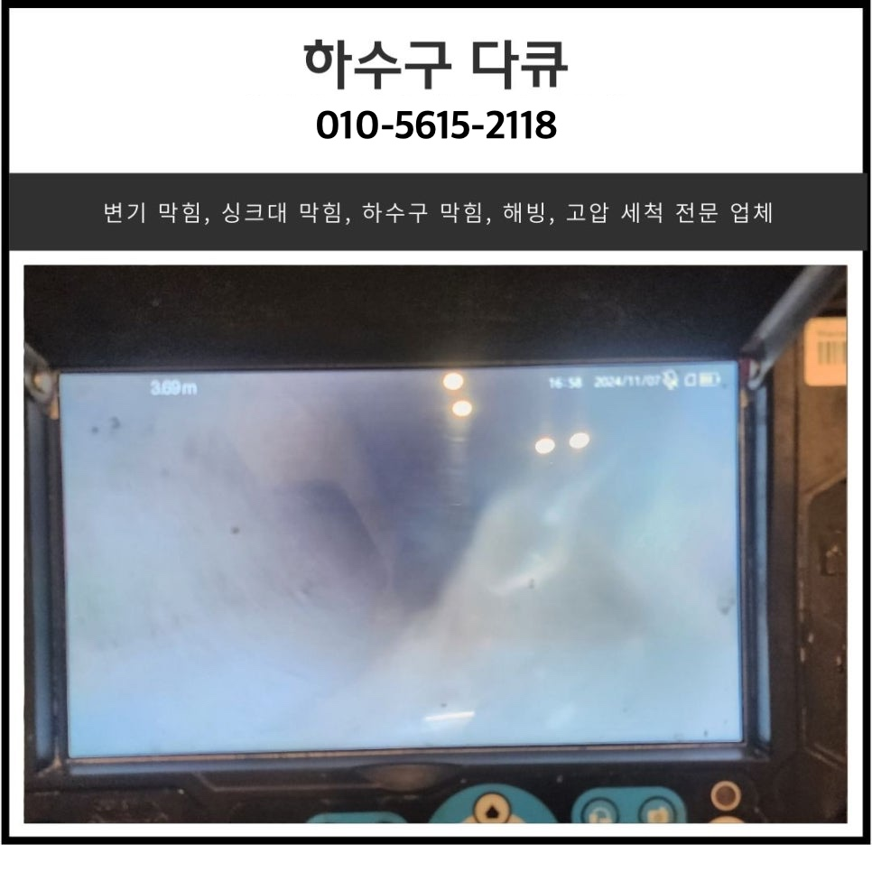
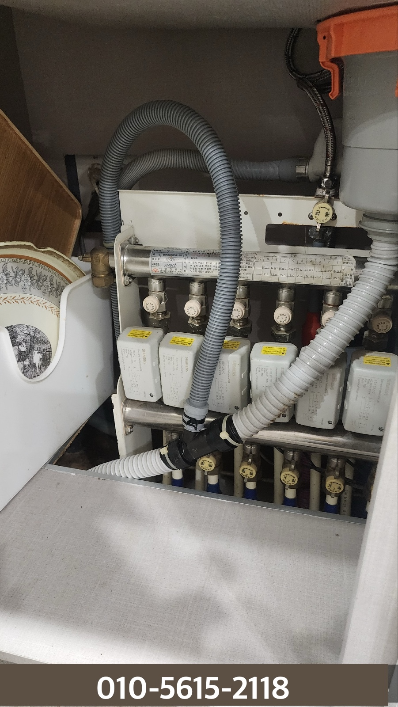
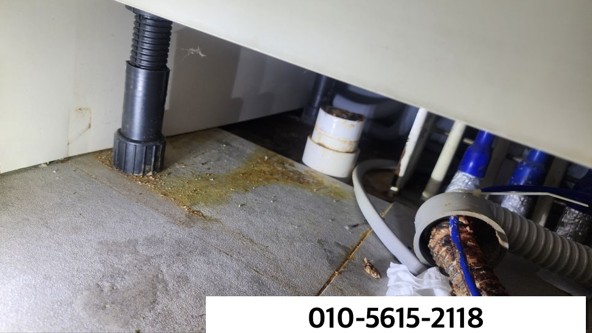
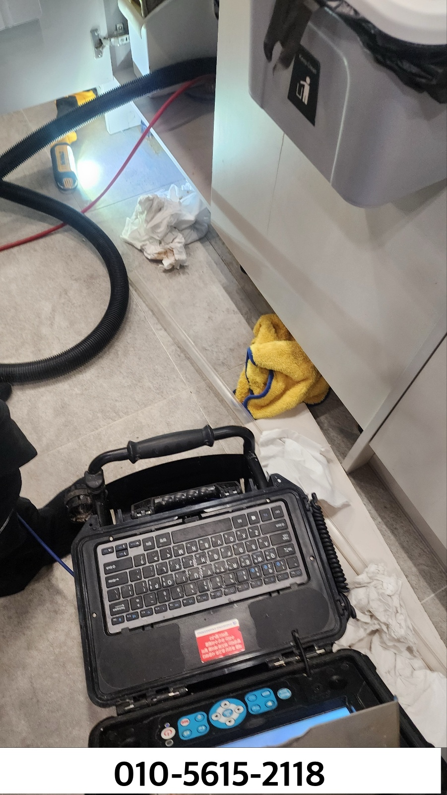
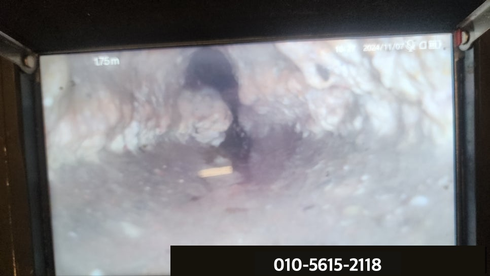
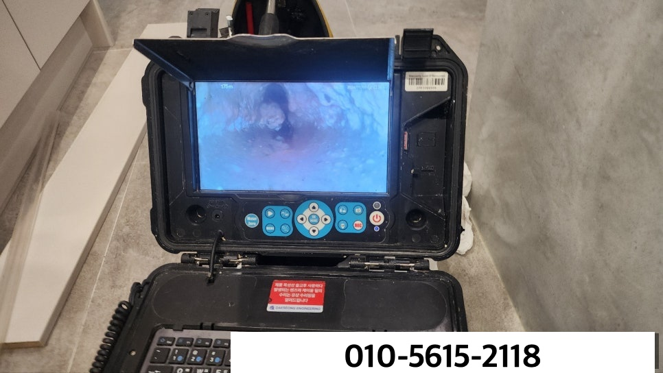
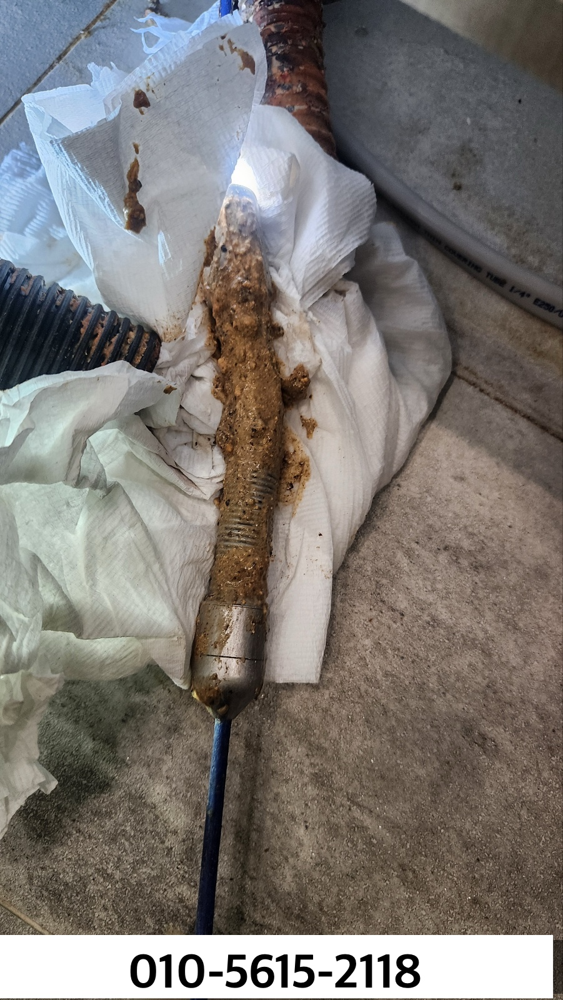

🏠 평택 송탄동 싱크대 역류 송탄 하수구 막힘 배관 뚫는 업체
용인시 처인구 배관막힘 전문 시공 후기

📋 작업 개요
- 위치: 용인시 처인구, 수원시 영통구, 화성시 동탄
- 서비스 유형: 배관막힘, 누수수리, 내시경점검
- 작업 일시:
- 업체명: 하수구수사대 (010-5615-2118)
🔍 문제 상황
안녕하세요.
평택 송탄동 싱크대 역류, 송탄 하수구 막힘 배관 뚫는 업체 하수구 다큐입니다.
평택 송탄동에 위치한 가정집에서 싱크대 역류 문제로 연락을 주셨습니다.
집안 화장실 세면대나 욕조, 세탁실 등 다른 하수구는 아무런 문제가 없는데 얼마 전부터 주방 싱크대에서 물을 사용하면 평소에 듣지 못했던 소리도 들리고, 시원하게 물이 내려가지 않아 답답함을 느끼셨다고 해요.
그러다 며칠 전부터는 싱크대에서 물을 조금 많이 사용하게 되면 아주 느린 속도로 배수가 되어 하수구에 문제가 생겼다는 것을 느끼고 인터넷 검색을 열심히 하신 끝에 하수구 닥터에게 연락을 주셨습니다.
싱크대에서 사용한 물이 느리게 흘러가는 것은 참을 수 있었지만, 그대로 방치했다가 아랫집으로 누수가 이어질 수 있다는 것을 알게 되면서 빨리 연락을 주셨더라고요.
고객님께 주소를 받아 체크해 보니 다행히 하수구 다큐와 20분 정도 떨어진 곳이라 신속하게 방문해 드렸습니다.

🔎 원인 분석
💡 전문가 진단: 정밀 진단 장비를 사용하여 슬러지의 고착 여부를 판명하고 타격/세척 작업을 실시했습니다.
송탄 하수구 막힘 배관 뚫는 업체 하수구 다큐는 필요한 장비를 챙겨 주방으로 들어가 점검을 시작했어요.
평택 송탄동 싱크대 역류의 원인을 확인해 보기 위해 하수구와 연결되어 있던 주름 배관은 제거하자 악취가 심각했습니다.
그뿐만 아니라 하수구에 연결되어 있던 주름 배관에 슬러지가 들러붙어있는 상태였어요.
주름 배관만 봐도 배관 내부에 얼마나 많은 이물질이 쌓여있을지 짐작할 수 있었지만, 정확한 원인을 확인하기 위해 배관 내시경을 넣어 확인해 보기로 했습니다.
내시경 카메라의 경우 배관 내부를 실시간으로 확인할 수 있는 장비로, 육안으로 확인이 어려운 내부 문제를 정확히 확인할 수 있어 현장에서 작업할 때 없어서는 안되는 장비에요.
내시경 카메라가 내부로 진입해 촬영한 화면을 찍은 사진입니다.
배관 내부에 기름 슬러지가 붙어있어 물의 흐름을 방해하고 있는 상태였어요.

🔧 작업 과정
싱크대에서 많은 양의 물을 사용하고 흘려보내는데 물이 흘러갈 수 있는 구멍이 작다 보니, 배수 속도도 느려지고 역류로 이어진 것 같습니다.
고객님께 평택 송탄동 싱크대 역류의 원인을 알려드리기 위해 내시경 카메라를 제거했더니 많은 양의 기름 슬러지가 들러붙어 나왔어요.
진흙처럼 찐득한 형태이다 보니 석션과 플렉스 샤프트 장비를 이용해 작업을 진행할 계획입니다.
고객님께서도 기름 슬러지와 동반된 악취도 심하고 이물질이 이렇게 많이 쌓여있을 줄 몰랐다며 배관 청소를 진행해달라고 하셨어요.
송탄 하수구 막힘 배관 뚫는 업체 하수구 다큐는 내시경 카메라로 내부를 살펴보면서 플렉스 샤프트를 이용해 해이 물질을 제거하기로 했습니다.
플렉스 샤프트 장비는 노즐 끝에 달려있는 체인이 전동드릴의 빠르게 회전하는 힘을 전달받아 강하게 회전하면서 붙어있는 이물질을 타격해 떨어트리는 작업을 진행합니다.
배관 벽면에서 떨어진 기름 슬러지는 석션을 사용해 빨아들여 완벽하게 제거해 주는 작업을 반복해야 해요.
내시경으로 이물질의 위치를 확인하고 플렉스 샤프트로 타격해 떨어트리고, 석션으로 빨아들이는 작업을 반복해서 한참을 진행해 드리자 점차 배관이 깨끗해지는 것을 확인할 수 있었어요.
싱크대 배관에서 제거된 기름 슬러지의 양이 어마어마하죠?
열심히 작업한 덕분에 배관은 마치 새것처럼 깨끗해진 것을 확인할 수 있었습니다.
기름 슬러지 제거하는 작업을 모두 마치고 많은 양의 물을 받아 한 번에 흘려보내며 다른 문제는 없는지 꼼꼼하게 테스트를 진행해 드리고 마무리할 수 있었습니다.


✅ 작업 완료
싱크대를 사용하다 보면 아무리 관리를 잘 해도 막힘이나 역류가 발생할 수밖에 없어요.
고민하지 마시고 하수구 다큐로 연락 주시면 시원하게 해결해 드리겠습니다.
경기도 평택시 고덕중앙로 322 4층 129호




⚠️ 하수구 배관 막힘 예방 및 관리 가이드
- ✅ 머리카락, 비닐, 물티슈 등 물에 분해되지 않는 이물질은 절대 흘려보내지 마세요.
- ✅ 기름기 많은 식기는 설거지 전 키친타올로 먼저 기름때를 닦아내세요.
- ✅ 주기적으로 배수구에 뜨거운 물을 가득 부어주어 유지방 고착을 방지하세요.
- ✅ 작업 후 1년 이내 재발 시 무상 A/S 보증 서비스를 제공합니다.
💡 핵심 정리
- 확실한 장비 작업(내시경 점검 및 샤프트 스케일링)으로 원인을 뿌리 뽑습니다.
- 작업 후 1년 이내에 동일한 부위 재발 시 100% 무상 A/S 서비스를 보장합니다.
- 서울 · 경기 · 인천 전 지역에 24시간 언제든 긴급 출동할 수 있도록 항시 대기 중입니다.
❓ 자주 묻는 질문 (FAQ)
🚨 용인시 처인구 배관막힘 문제로 고민이신가요?
정확한 원인 진단과 확실한 시공으로 재발 없는 해결을 약속드립니다.
24시간 긴급 출동 | 서울 · 경기 · 인천 전지역 | 1년 내 재발 시 무상 A/S